今回は、物件のデータから神奈川大学に新入生として入学するなら、どこの駅に一人暮らしするのがおすすめかを分析・紹介していきます。
1.物件データと分析
最も大事であろう合計時間と家賃の分析から入ります。
次の各グラフは、横浜駅へ乗り入れている路線である、JR線（東海道本線、京浜東北線、根岸線、横須賀線、湘南新宿ライン）、
横浜市営地下鉄ブルーライン、東急東横線、京急本線、相模鉄道本線、横浜高速鉄道みなとみらい線の
合計６社１０路線の合計時間と家賃のグラフです。
↓JR東海道本線
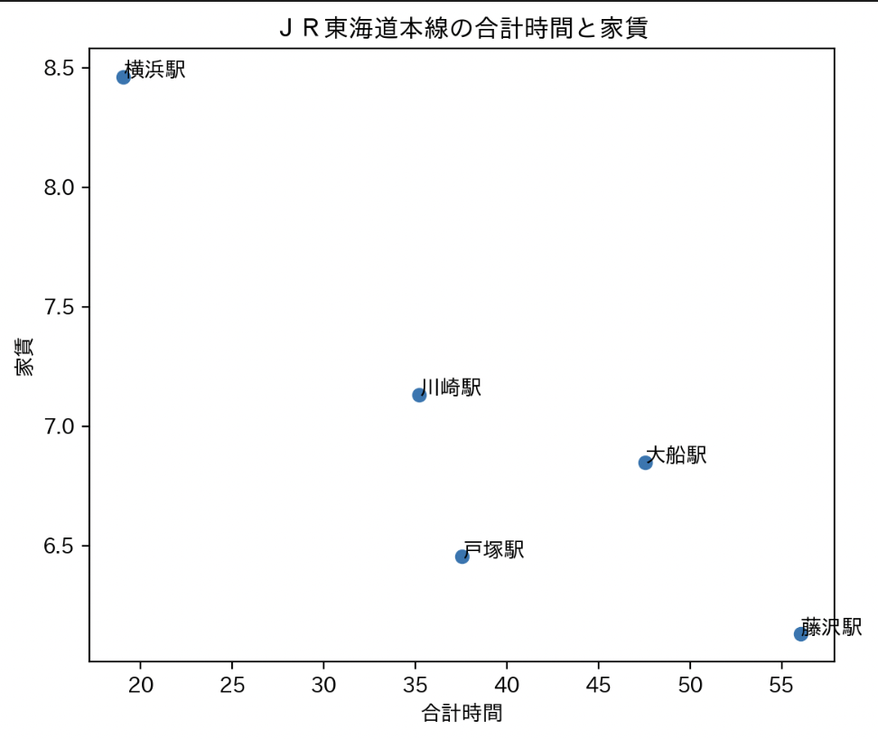
↓JR京浜東北線
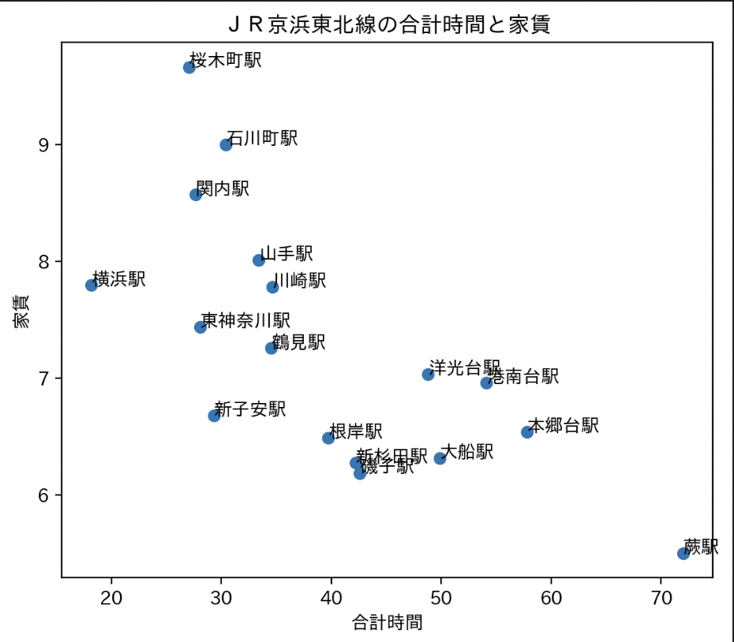
↓JR横須賀線
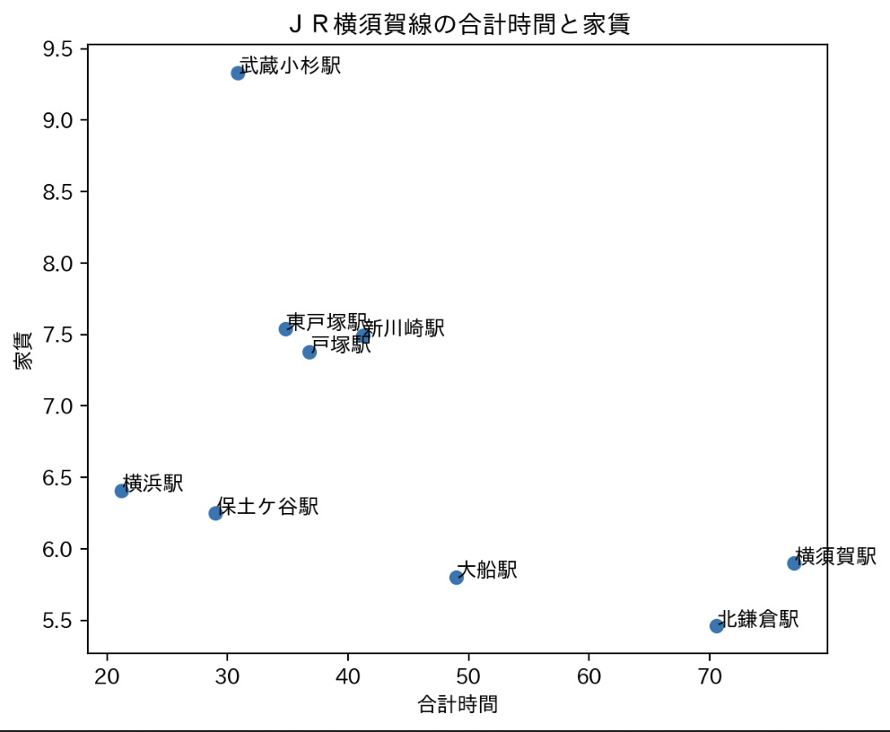
↓JR根岸線
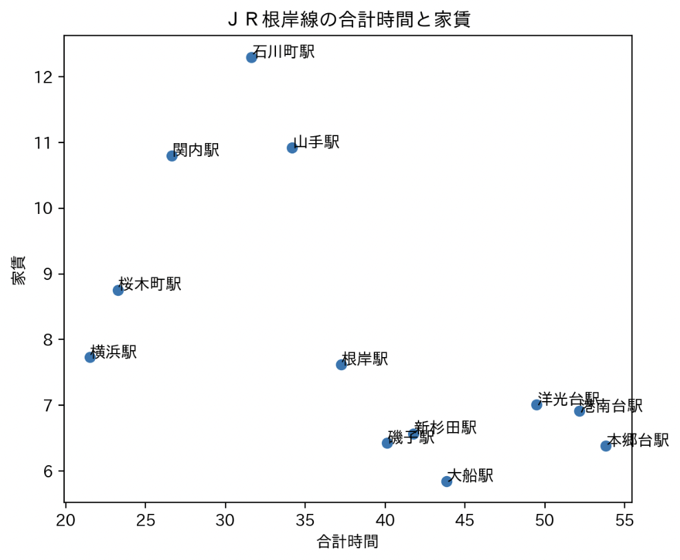
↓JR湘南新宿ライン
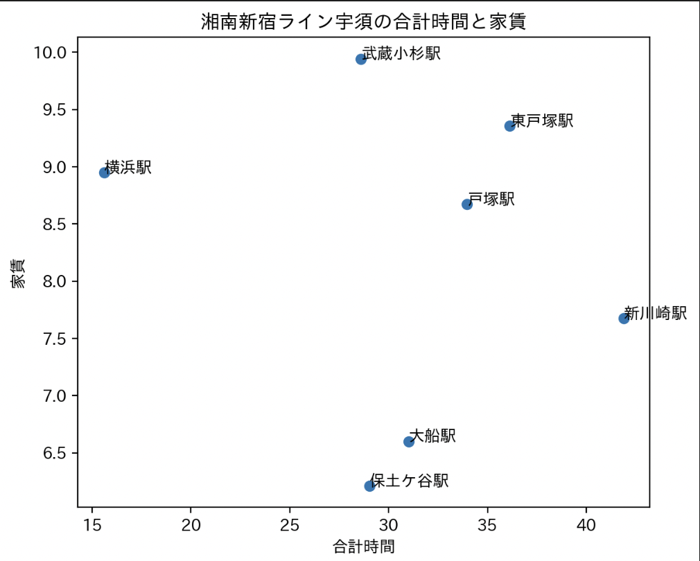
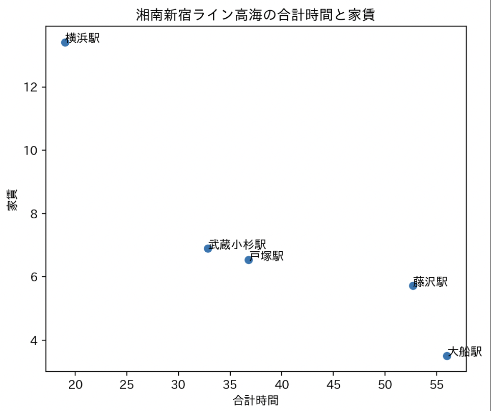
↓横浜市営地下鉄ブルーライン
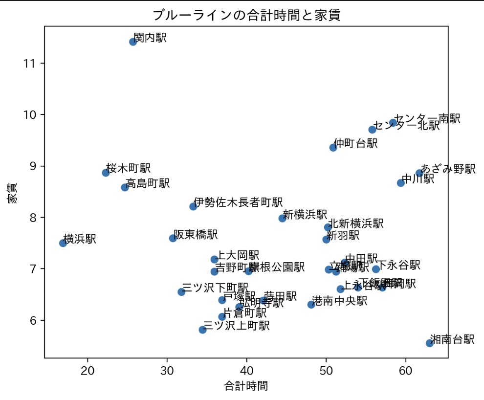
↓東急東横線
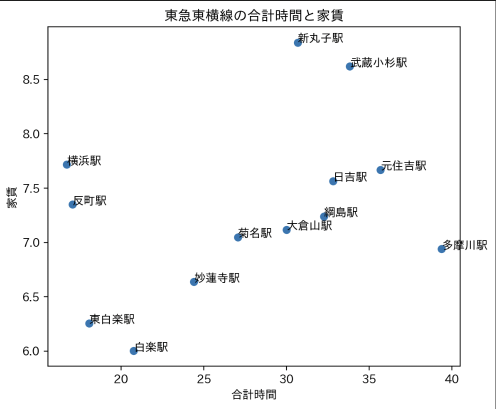
↓京急本線
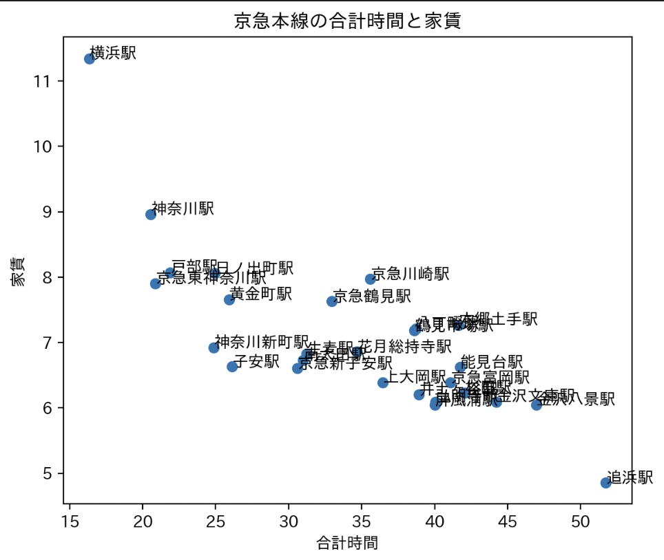
↓相模鉄道本線
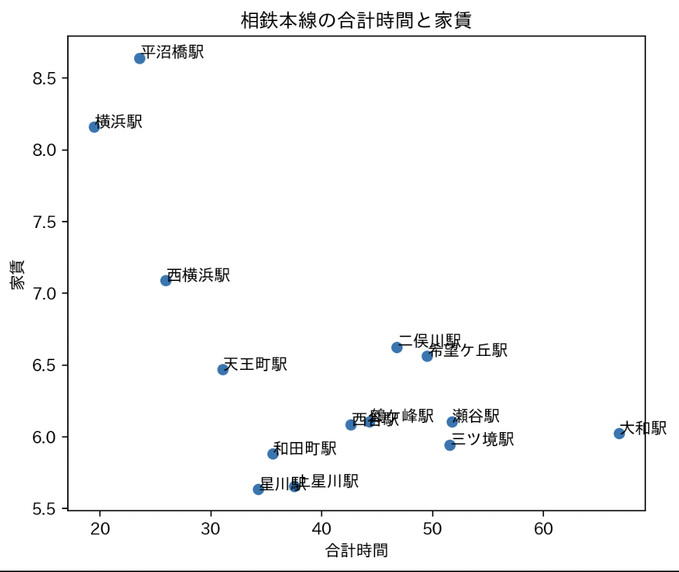
↓横浜高速鉄道みなとみらい線
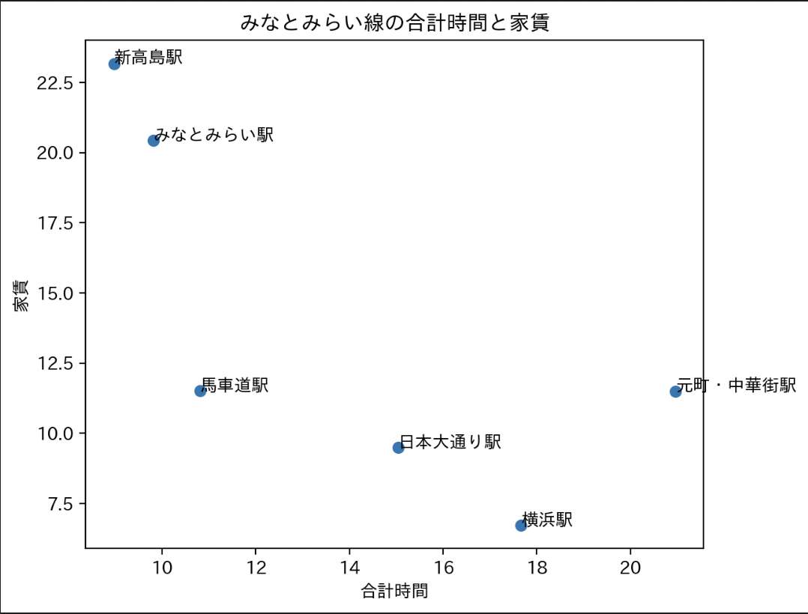
ここからわかるように、横浜駅に乗り入れているそれぞれの路線内の駅でも家賃の差があるのがわかると思います。
今回はこの中でも、家賃が安く、合計時間も比較的低い駅をおすすめ理由も込みでいくつか紹介します。
2.結果・おすすめの駅
①白楽駅（東急東横線）
- 合計時間が約20分
- 家賃が6万円ほど
- 横浜キャンパスが近いため、そっちのサークルなどにも参加できる
- 大学が近くにある駅であるため、学生向けのお店なども多い
②子安駅（京急本線）
- 合計時間が30分未満
- 家賃が7万円未満
- 複数の鉄道路線の利用可能
③保土ヶ谷駅（JR横須賀線）
- 合計時間が30分未満
- 家賃が6,5万円未満
- 万が一横浜で終電を逃しても終電を逃しても深夜急行バスの利用が可能（そもそも逃すな…）
- 子安と同様複数の鉄道路線の利用可能